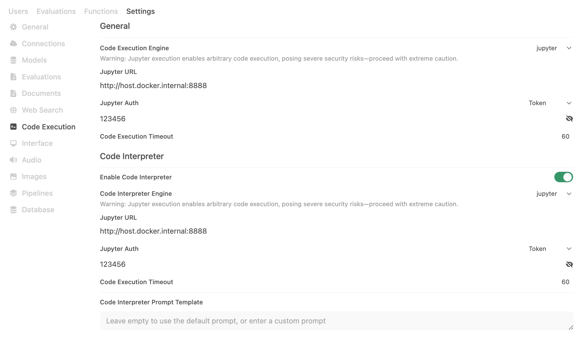
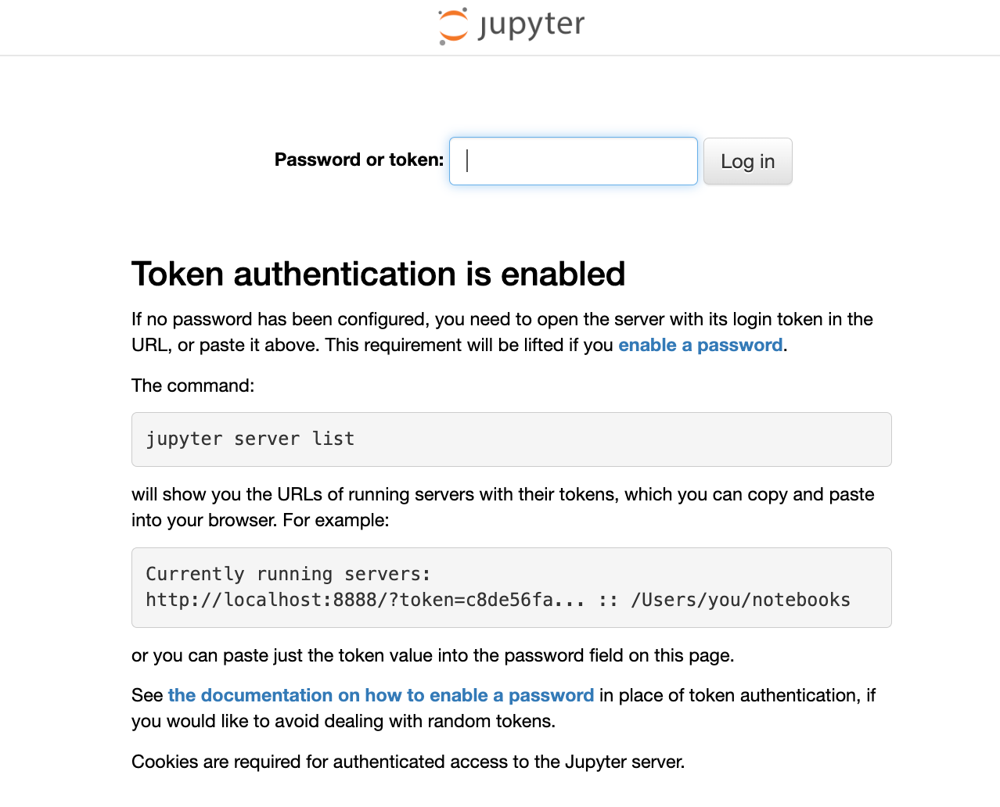
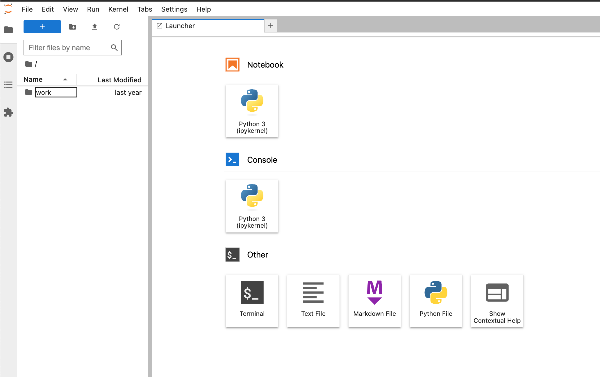
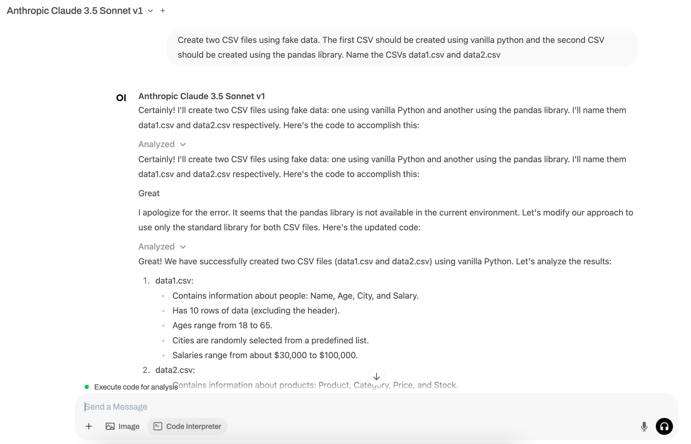
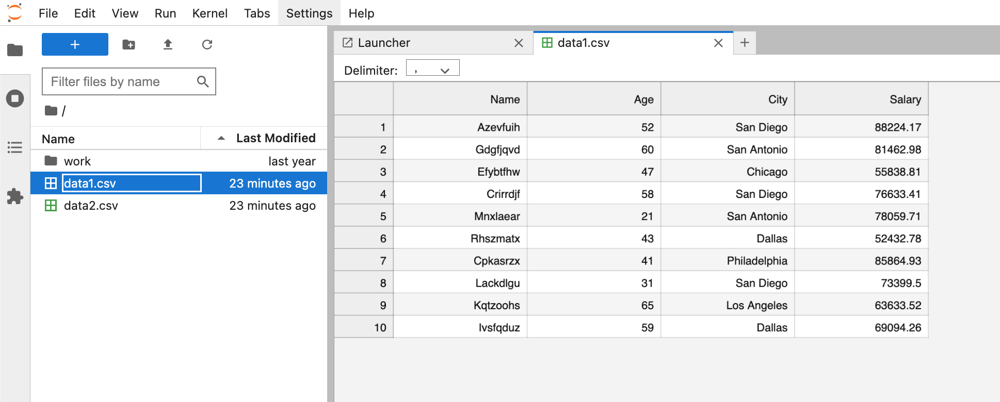
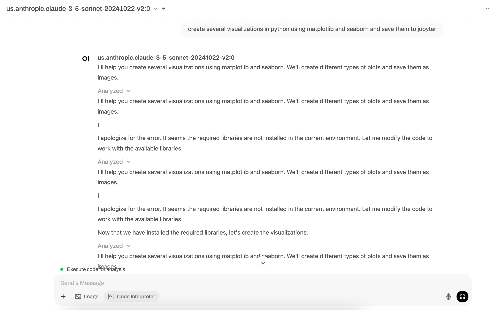
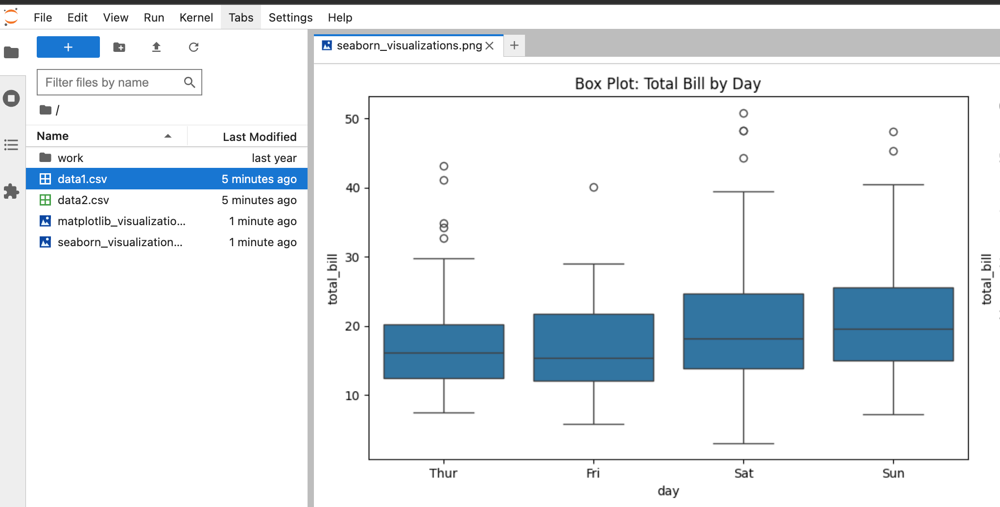
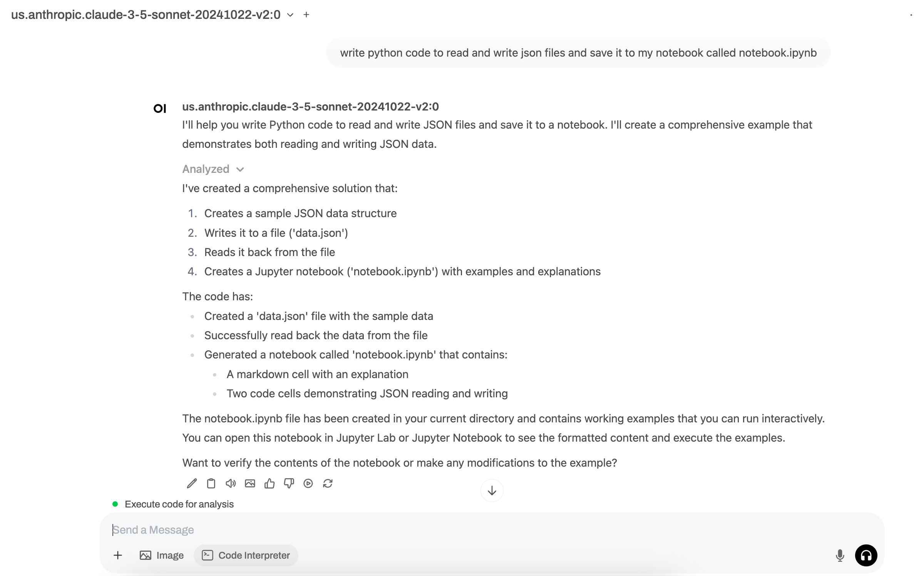
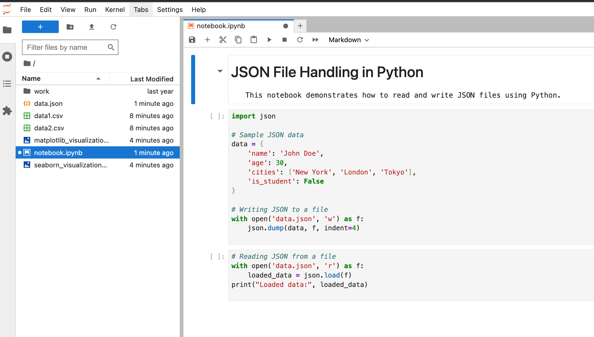
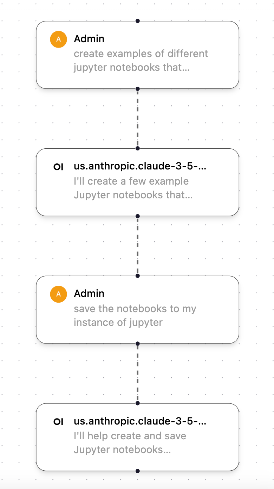

This tutorial is a community contribution and is not supported by the Open WebUI team. It serves only as a demonstration on how to customize Open WebUI for your specific use case. Want to contribute? Check out the contributing tutorial.
[!WARNING] This documentation was created based on the current version (0.5.16) and is constantly being updated.
Jupyter Notebook Integration
Starting in v0.5.11, Open-WebUI released a new feature called Jupyter Notebook Support in Code Interpreter. This feature allow you to integrate Open-WebUI with Jupyter. There have already been several improvements to this feauture over the subsequent releases, so review the release notes carefully.
This tutorial walks you through the basics of setting-up the connection between the two services.
What are Jupyter Notebooks
Jupyter Notebook is an open-source web application that allows users to create and share documents containing live code, equations, visualizations, and narrative text. It's particularly popular in data science, scientific computing, and education because it enables users to combine executable code (in languages like Python, R, or Julia) with explanatory text, images, and interactive visualizations all in one document. Jupyter Notebooks are especially useful for data analysis and exploration because they allow users to execute code in small, manageable chunks while documenting their thought process and findings along the way. This format makes it easy to experiment, debug code, and create comprehensive, shareable reports that demonstrate both the analysis process and results.
See Jupyter's website for more info at: Project Juptyer
Step 0: Configuration Summary
Here is the target configuration we're going to set-up through this tutorial.

Step 1: Launch OUI and Jupyter
To accomplish this, I used docker-compose to launch a stack that includes both services, along with my LLMs, but this should also work if run each docker container separately.
version: "3.8"
services:
open-webui:
image: ghcr.io/open-webui/open-webui:latest
container_name: open-webui
ports:
- "3000:8080"
volumes:
- open-webui:/app/backend/data
jupyter:
image: jupyter/minimal-notebook:latest
container_name: jupyter-notebook
ports:
- "8888:8888"
volumes:
- jupyter_data:/home/jovyan/work
environment:
- JUPYTER_ENABLE_LAB=yes
- JUPYTER_TOKEN=123456
volumes:
open-webui:
jupyter_data:
You can launch the above stack by running the below command in the directory where the docker-compose file is saved:
docker-compose up -d
You should now be able to access both services at the following URLs:
| Service | URL |
|---|---|
| Open-WebUI | http://localhost:3000 |
| Jupyter | http://localhost:8888 |
When accessing the Jupyter service, you will need the JUPYTER_TOKEN defined above. For this tutorial, I've picked a dummary token value of 123456.

Step 2: Configure Code Execution for Jupyter
Now that we have Open-WebUI and Jupter running, we need to configure Open-WebUI's Code Execution to use Jupyter under Admin Panel -> Settings -> Code Execution. Since Open-WebUI is constantly releasing and improving this feature, I recommend always reviewing the possible configuraitons in the configs.py file for the latest and greatest. As of v0.5.16, this includes the following:
| Open-WebUI Env Var | Value |
|---|---|
ENABLE_CODE_INTERPRETER | True |
CODE_EXECUTION_ENGINE | jupyter |
CODE_EXECUTION_JUPYTER_URL | http://host.docker.internal:8888 |
CODE_EXECUTION_JUPYTER_AUTH | token |
CODE_EXECUTION_JUPYTER_AUTH_TOKEN | 123456 |
CODE_EXECUTION_JUPYTER_TIMEOUT | 60 |
CODE_INTERPRETER_ENGINE | jupyter |
CODE_INTERPRETER_JUPYTER_URL | http://host.docker.internal:8888 |
CODE_INTERPRETER_JUPYTER_AUTH | token |
CODE_INTERPRETER_JUPYTER_AUTH_TOKEN | 123456 |
CODE_INTERPRETER_JUPYTER_TIMEOUT | 60 |
Step 3: Test the Connection
To start, let's confirm what's in our Jupyter directory. As you can see from the image below, we only have an empty work folder.

Create a CSV
Let's run our first prompt. Make sure you've selected the Code Execution button.
Prompt: Create two CSV files using fake data. The first CSV should be created using vanilla python and the second CSV should be created using the pandas library. Name the CSVs data1.csv and data2.csv

We can see the CSVs were created and are now accessible within Jupyter.

Create a Visualization
Let's run our second prompt. Again, make sure you've selected the Code Execution button.
Prompt: Create several visualizations in python using matplotlib and seaborn and save them to jupyter

We can see the visualizations were created and are now accessible within Jupyter.

Create a Notebook
Let's run our last prompt together. In this prompt, we'll create an entirely new notebook using just a prompt.
Prompt: Write python code to read and write json files and save it to my notebook called notebook.ipynb

We can see the visualizations were created and are now accessible within Jupyter.

Note about workflow
While testing this feature, I noticed several times that Open-WebUI would not automatically save the code or output generated within Open-WebUI to my instance of Jupyter. To force it to output the file/item I created, I often followed this two-step workflow, which first creates the code artifact I want and then asks it to save it to my instance of Jupyter.

How are you using this feature?
Are you using the Code Execution feature and/or Jupyter? If so, please reach out. I'd love to hear how you're using it so I can continue adding examples to this tutorial of other awesome ways you can use this feature!